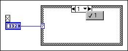

When you have a Case structure, you must have a case that corresponds to each value in the selector. For example, in the following illustration the selector is wired with an integer. However, the Case structure only has one case to handle the selector value 1. If a value other than 1 is passed to the Case structure, LabVIEW does not know what to do.
To correct this error, specify a default case. A default case is the case that LabVIEW executes if the input to the selector does not specifically match the value of any case. If you do not want LabVIEW to execute anything when the input does not match, specify a default case that has nothing in it.
Alternatively, you can correct this error by using ranges. Suppose you want all values less than or equal to one to take the same action. You can create a case that handles all selector values from negative infinity to one. Use the Labeling tool to click the case selector label and enter ..1 to create a case that handles all values from negative infinity to one. You also can enter 2.. to create a case that handles all values from 2 through infinity. For string ranges, a range of a..c includes all strings beginning with a or b, but not c.
| Note String ranges are case sensitive. For example, a range of A..c will behave differently than a..c because LabVIEW uses ASCII values to determine a string range. |